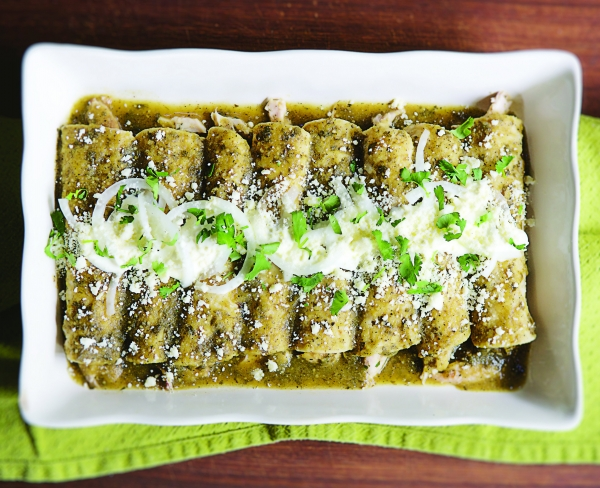

Green Enchiladas

Filled with chicken and cheese and topped with the most
delicious sauce, these green chicken enchiladas are perfect
for when you are craving Mexican food.
Ingredients
- Butter
- Rice
- chicken Broth
- Chicken Breast
- Monterrey Jack Cheese
- Sweet Corn
- Enchilada Sauce
- Corn Tortillas
Steps
- In a large skillet, saute rice with butter. Add chicken broth and
simmer over low heat for 15 to 20 minutes, or until rice is cooked
and tender. Let cool.
- Preheat over to 350 degrees F(175 degrees C).
- Cube 3/4 pound of the cheese; shred the remaining 1/4 pound cheese
and set aside. Combine chicken, 3/4 pound cubed cheese, corn, cooled
rice and 1/4 cup sauce in a large bowl. Mix together. Warm tortillas
in the microwave for 2 minutes and spread another 1/4 cup sauce in the
bottom of a 9x13 inch baking dish.
- Place a little of the chicken mixture on each tortilla and roll up. Place
filled tortillas (as many as will fit) in the baking dish. Sprinkle with 1/4
pound shredded cheese and top with any remaining sauce, pouring evenly over all.
(Freeze remainig tortillas for future green sauce enchiladas)
- Bake at 350 degrees F (175 degrees C) for 30 minutes.